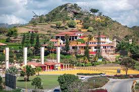
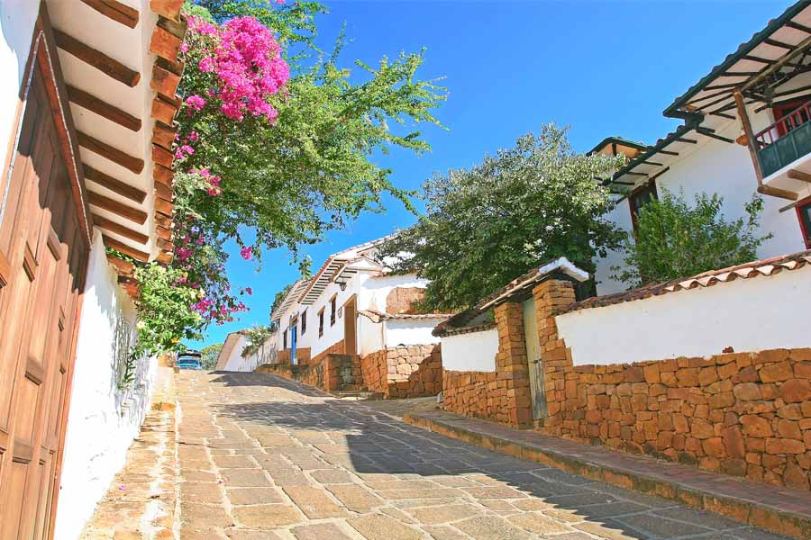
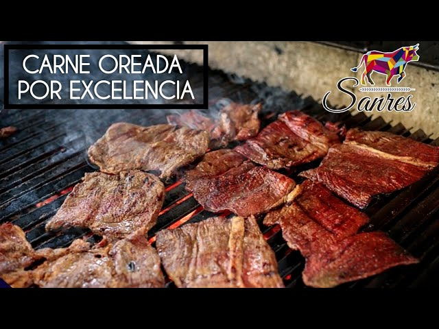
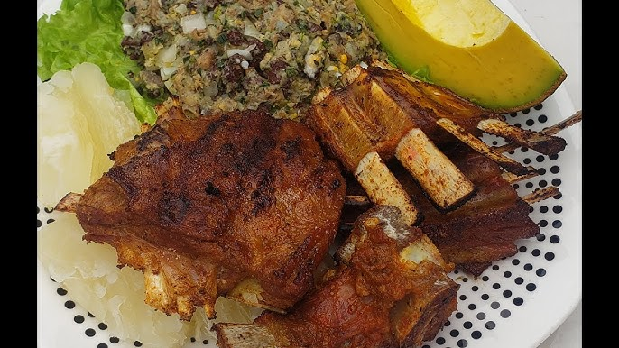
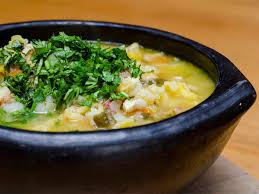

santander
información
es un departamento colombiano ubicado en la Región Andina, famoso por su variada geografía montañosa, su riqueza cultural, su biodiversidad y su gastronomía, con platos icónicos como las hormigas culonas. Su economía se basa en el turismo, la agricultura (principalmente tabaco, cacao y yuca) y la minería, mientras que su capital es la ciudad de Bucaramanga. El departamento ofrece atractivos turísticos como el Cañón del Chicamocha, la colonial Barichara, y el parque nacional natural de Chicamocha. .
Sitios Turísticos✈️
Parque Nacional Natural de Chicamocha
parque temático cultural y recreativo ubicado en Santander, Colombia, dentro del Cañón del Chicamocha, el segundo cañón más grande del mundo

cañon del Chicamocha
ubicado en Santander, Colombia, es un impresionante accidente geográfico conocido por su gran tamaño y belleza natural. Se caracteriza por su profundidad, que alcanza los 2.000 metros, y su extensión de más de 108.000 hectáreas, lo que lo convierte en el segundo cañón más grande del mundo.
.jpeg)
la colonial Barichara
Barichara es un pintoresco pueblo colonial en Santander, Colombia, famoso por sus calles empedradas, casas blancas con techos de barro y arquitectura de tapia pisada, que le han valido el reconocimiento de monumento nacional y uno de los pueblos más bonitos del país.

Gastronomía típica🍽️
Carne Oreada
uno de los platos más representativos del departamento de Santander. Este método de conservación, que utiliza una técnica ancestral de secado al sol, permite disfrutar de una carne de res adobada y deshidratada con un sabor único, gracias a una combinación de ingredientes autóctonos.

El cabrito
el cabrito es un plato tradicional y muy apreciado en Santander, conocido por su carne tierna y jugosa. Se prepara de diversas formas, como frito, al horno o sudado, y se suele acompañar con la arepa santandereana, yuca y la pepitoria.

el Mute
Este mute está hecho a base de maíz pelado, costilla, estómago (incluyendo los callos) y patas de res, con presencia de una gran cantidad de verduras y especias, entre ellas papa criolla (papa nativa colombiana pequeña y de color amarillo), habas y frijoles.

Área y componentes económicos💰
manofactura
La manufactura es un sector importante para la economía de Santander, contribuyendo significativamente al Producto Interno Bruto (PIB) del departamento, junto con el agro y el turismo.

tecnología y servicios
La economía de Santander está en transición hacia un modelo más tecnológico y de servicios, apoyándose en su diversificación y talento humano para crecer en sectores como tecnología, fintech, salud y servicios especializados, aunque mantiene su solidez en la agroindustria, manufactura, y el sector servicios que es el más importante en el departamento.
extracion de petroleo
Esto esta en la partte de barrancabermeja pero ayuda demaasiado con la empresa que se llama ecoperol que es una de las mayores empresas que genera empleo y ademas es una de las mas grandes a nivel departamental manejando grandes posos de petroleo en santander y otros departamentos.

Datos económicos 📊
Principales datos económicos de Santander :
- PIB Departamental (2023): $59.507 billones a precios constantes, según el DANE.
- asa de Desempleo en Bucaramanga (2023): La capital, Bucaramanga, presentó una tasa de desempleo de 7.9%, siendo una de las dos ciudades con menor tasa de desocupación.
- Crecimiento del PIB (2023): 5.3% con respecto al año anterior, según el DANE.
Detalles de el PIB departamental 2023:
- 0.3 p.p adicionales al nacional
- 53% con respecto a años anteriores al DANE
- Sector Servicios: 58.6% del PIB departamental, con un crecimiento del 5.8%.
- Sector Industrial: 26.1% del PIB departamental, con un crecimiento del 4.3%.
- Sector Agropecuario: 15.3% del PIB departamental, con un crecimiento del 4.1%.